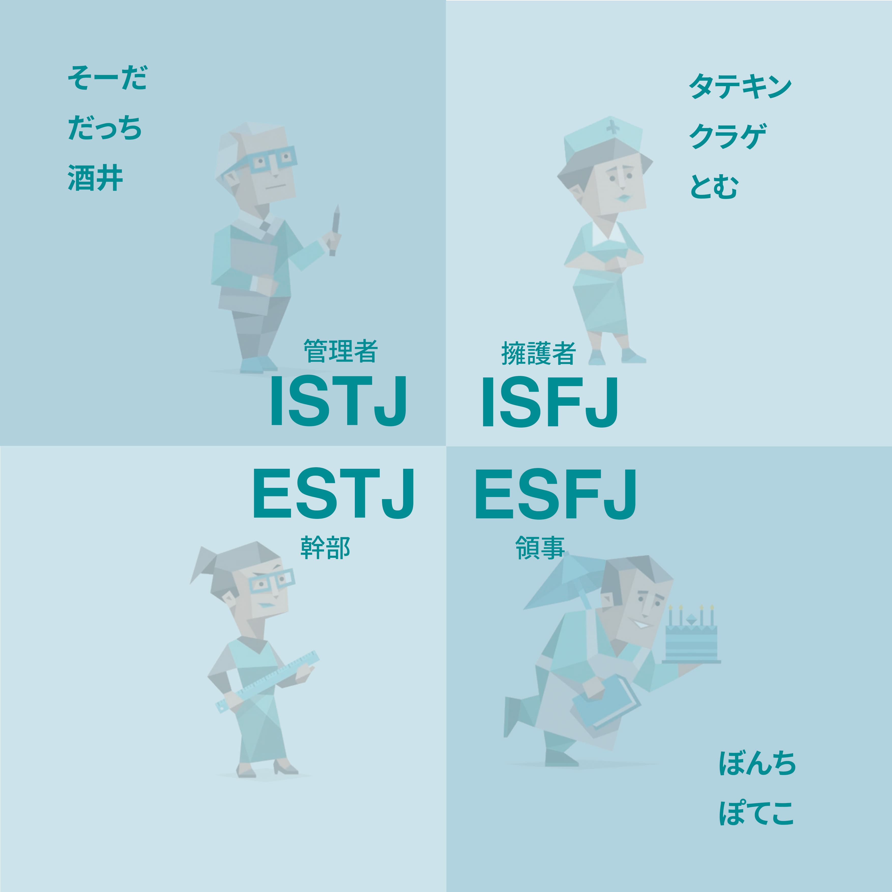

[ liberation in the apartment ] website

Medium Website
year September2025
software photoshop / Visual Studio Code
私たちのコミュニケーション手段の変容も理由として挙げられる。webを介してのコミュニケーションではフィジカルな情報交換の過程を抜きに、他者の存在を証明するようなフィードバックを直に得る事が可能である。これにより生み出された無数の存在しない他者、また架空の場所が、私たちの行動を精査し記録するイメージを私たちは持っている。 こうして自我が解放された過程を含む作品を一人一つの部屋にまとめる。個人が設計する展示室というのは元来、物の主体、またそれらを鑑賞する主体が揺らぐ空間性を内在するが、それを階層に並べることで展示室どうしにフィジカル/メタフィジカルな相互作用を起こす。そこに鑑賞者も交えた際に生まれる新しいコミュニケーションを通して私たちの生活を公私の枠組みから真に解放する。そのための試行を『liberation in the apartment』というグループ展として提示、記録する。@kobune
このサイトは、本展示会のフロア構成に合わせて、上下二階建てのレイアウトで構成されています。
アパートという建物に見られる無個性な構造や、同じ物体が繰り返される連続性を表現しています。
そのため、どれだけスクロールしてもページに終わりはなく、永続的に続いていきます。
/p>